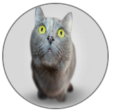

- The avatars border is rounded so that it appears as a circle
- The avatars size is 150px
- The avatar has a solid border which is 2px and colored gray
it should look like this:

well done, now we play around a little with css and we transform the image,
we want to blur it out and if the mouse hovers over it, we display it normally.
we do not want to blur out the border fully.